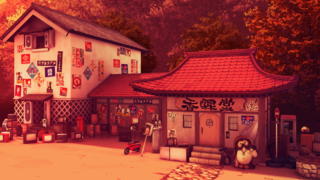

- Welcome to Touhou Wiki!
- Please register to edit. For assistance, check in with our Discord server or IRC channel.
Kourindou
Kourindou | |
|---|---|
|
 Kourindou as seen in Urban Legend in Limbo
| |
| Location |
Between the Human Village and the Forest of Magic |
| Residents |
|
Appearances | |
| Official Games | |
| |
| Print Works | |
| |
Kourindou (香霖堂) is an antique store seated between the Human Village and the Forest of Magic, run by Rinnosuke Morichika.
General Information[edit]
The store is Rinnosuke's home. Although it's a somewhat well-known establishment for the residents of Gensokyo, Rinnosuke rarely (if ever) actually sells anything, despite keeping an exhaustive inventory; he mostly trades and/or puts up with "creative borrowing" from Reimu Hakurei and Marisa Kirisame. The store doesn't get very many customers aside from the usual noisy ones. Mold often grows in the store, as well, which may contribute to this.
On occasion, the store is used for completely non-business ventures, such as cooking and combat. The store has also taken quite a bit of damage over time, thanks to conflicts that involve the store's occupants.
The inventory of Kourindou is (presumably) its main draw, as it mostly includes items from the outside world. Teacups, feather pillows, computing magazines, kerosene/paraffin heaters, and even an iPod have made their way there over time.
Kourindou's Appearances[edit]
Windows[edit]
Marisa Kirisame has mentioned the shop to Reimu Hakurei in the Match Mode of Phantasmagoria of Flower View. Also, in Sanae B's scenario in Undefined Fantastic Object, Nazrin mentions a second-hand shop where she acquired the jeweled pagoda, which is likely Kourindou.
Spin-offs[edit]
- Urban Legend in Limbo
For the first time, the shop is a stage location in Urban Legend in Limbo, associated to Marisa Kirisame. Even though it's in this game, Rinnosuke does not appear.
Gallery[edit]
Kourindou interior in Curiosities of Lotus Asia

White cherry blossom tree behind Kourindou in Curiosities of Lotus Asia
Kourindou in Inaba of the Moon and Inaba of the Earth

Kourindou in Wild and Horned Hermit